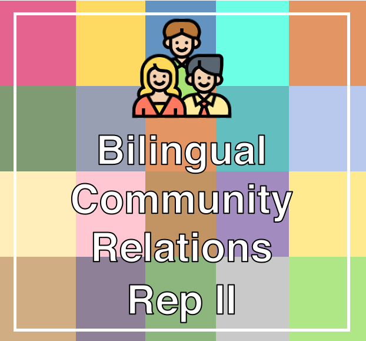

Anthem Inc
more_vert
Bilingual Community Relations Rep close
Perform research for population-level data and in order to provide context and
perspective regarding North Carolina population landscape and wellness needs in
different communities.
Build and maintain meaningful relationships with local residents, civic groups,
non-profit organizations, social service agencies and other community associations
in North Carolina.
Conduct outreach projects such as educational events, presentations, and participate
in other community initiatives in an effort to promote the organization's mission
and
products.
Represent the company in different events, conferences or collaborative community
meetings.
Maintain data bases for detailed outreach undertakings, partner information and
future
agendas.
Efficiently manage budgets and sponsorships. Meet expense submission deadlines.